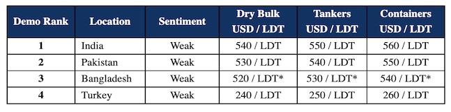

inWeekly Demolition Reports15/11/2022
The decline of the sub-continent markets came into stark view once again this week, with even vintage tonnage being returned to trading lanes, such is the ineptitude and reluctance of collective sub-continent recyclers to commit on the paucity of any available units, at anywhere near sensible numbers.
Reliability and workable L/Cs remain a key concern for Cash Buyers and Ship Owners alike, with Bangladesh all but limiting new arrivals as the Central State bank refuses to sanction any fresh financing for ship recycling endeavors.
Reportedly, only essentials (such as food, fuel, and fertilizers) are able to procure Central State bank approval in Bangladesh, especially for the valuable reserves of U.S. Dollars that are budgeted for domestic expenses. This means that only a small number of Bangladeshi Buyers who have access to private funds are able to secure vessels for recycling at the moment.
Meanwhile, steel plate prices have been falling (more than firming) across the sub-continent markets and currencies have also depreciated astonishingly across all locations to record / historical lows and this is not giving Recyclers any confidence to offer up firm or even workable levels with any sort of certainty.
India remains perhaps the most reliable and performing of all markets, even though prices have come off significantly in Alang, and any available offers are tentative at best, coming in at the low USD 500s/LDT, levels that are now becoming an unfortunate reality of ship recycling today.
Pakistan is similarly low, with End Buyers (for the most part) keeping their eyes on competing markets before offering generally unworkable and depressed numbers.
Finally, after last week’s dip in plate prices, Turkey remains suspended in ‘airplane mode’ with an additional dip in plate prices this week, and no activity reportedly taking place in Aliaga this week.
For week 45 of 2022, GMS demo rankings / pricing for the week are as below.

Source: GMS,Inc. ,https://www.gmsinc.net/gms_new/index.php/web